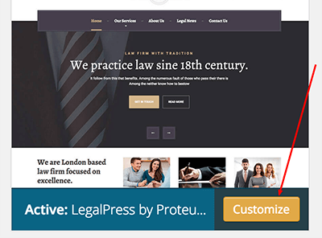
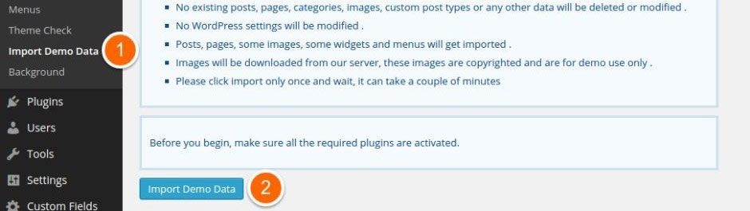
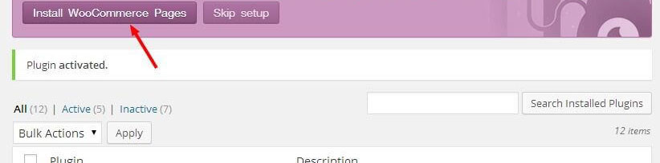

1. General & Installation
1.1. Few Words on Start
Introducing LegalPress, the best premium WordPress theme for lawyers, accountants and insurances. LegalPress is easy to set up and use. It provides a simple roadmap to create a great-looking website, so you can get back to what's most important - your business and clients. LegalPress is only available on ThemeForest, so read on to see why it’s perfect for your company’s WordPress website!
1.2. Installation & Updates
I assume you already have a fresh copy of WordPress installed on your server.
You can install the LegalPress WP Theme in three different ways:
- Using Envato Market plugin - preferred method
You can install any theme you purchased on ThemeForest by installing Envato Market plugin. Download the plugin here, by clicking on the Download ZIP button. Install the plugin like you would any other plugin in a zip file. This is the preferred method, because you will be able to update the theme to newer version (we are continually improving our products) from within the WordPress dashboard, like you would update a plugin or an official theme.
Envato WordPress Toolkit plugin is deprecated:Using Envato WordPress Toolkit - preferred method
You can install any theme you purchased on ThemeForest by installing Envato WordPress Toolkit plugin. Just follow this tutorial by wpmudev team. This is preferred method, because you will be able to update the theme to newer version (we are continually improving our products) from within the WordPress dashboard, like you would update a plugin or an official theme. - Upload a zip file
When you are logged in your WordPress dashboard go to Appearance » Themes » Add New » Upload Theme and select the zip filelegalpress.zipyou downloaded from the ThemeForest (installable WordPress files only) and click Install Now button. - FTP upload
Unzip the contents of thelegalpress.zipfile and upload the folder namedlegalpressto your server towp-uploads/themes/folder using a FTP client.
Once your theme is on the server, activate it by clicking the Activate button below the preview image in Appearance -> Themes :
Congratulations! Now the LegalPress WP Theme is installed.
You still need to install/activate the required and recommended plugins - you can do this by visiting Appearance » Install Plugins inside wp-admin.
1.3. Customize the Appearance
You can fully customize the appearance of the LegalPress Theme. Go to the Appearance » Themes and click on the Customize button:
The new window appears and you can now customize the appearance of your theme - upload your custom logo, change the base colors, enable/disable theme features, add Custom CSS or Javascript etc.
2. Demo Content
2.1. One Click Demo Install
You can import demo content from our site (with blurred licensed images) with a single click of a button.
2.2. Import XML File
If you want to import the demo content the old-fashioned way, you can get a fresh copy of the XML file on our server at this URL: http://artifacts.proteusthemes.com/xml-exports/legalpress-latest.xml. All you have to do it save it as a XML file and use it for the import: go to Tools » Import, click on WordPress (install the Import plugin if not already installed) and upload/import the previously saved xml file.
Demo Widgets
After you import the demo content, you can also import the widgets the old-fashioned way. The file for import is also located on our server: http://artifacts.proteusthemes.com/json-widgets/legalpress.json, save it as a widgets.wie (mind the file extension) and use it in the plugin Widget Importer & Exporter. Go to Tools » Widget Import/Export and import the file.
If for some reason these URLs are not available, then all you need to do is download the All files & documentation zip from ThemeForest and you will find the content.xml and widgets.json file in the extras folder.
3. Header
3.1. Top Bar
On the left side you can put Site Tagline Appearance » Customize » Site Title & Tagline, very usefull for all kinds of slogans.
The right side is a widget sidebar area called Top so you can customize this area in Appearance » Widgets » Top.
3.2. Logo & Favicon
Logo & Favicon can be changed in our Theme Options - Appearance » Customize » Theme Options » Logo & Favicon.
3.3. Header Widgets
We know that you like to have control over your site. With header widgets we give you exactly that. In that area you can use Icon Box, shortcode for buttons or any other custom elements.
3.3.1. Icon Box
With widget Icon Box you can put any kind of title with small text and image in the header. In our demo we use this widget for contact information which we think are very important for customers.
In this widget you can choose Title, Text and Icon from Font Awesome. You can also choose a link for the whole box. If you let that field empty Icon Box will not be clicakble.
We give you few Icons to choose from but you can actualy use any icon from 519 Font Awesome icons. Just paste the icon title in the Icon field and that's it. How cool is that?
You can also have more than one Icon Box in the Header.
3.4. Main Menu
Main Menu must be choosen in the wp-admin » Appearance » Menus. Theme locations for Main Menu is called Main Menu.
4. Pages
wp-admin » Pages is the area where you will spend most time when building a site. We added few tools in that process so you can create your pages easier and faster.
4.1. Page Templates
You can choose between 3 different Templates - Default Template, Front Page with Slider and Front Page With Layer/Revolution Slider.
Default Template: Just default template for simple layouts and Page Builder. First you must choose Page Builder option under the title and you are ready to go. You can add our widgets here, choose different visual styles and much more. More about that in chapter 4.2.
Front Page with Slider: This is unique template which adds option for slider in the page options. It can be used with Page Builder. More about that in chapter 5.
Front Page with Layer/Revolution Slider: We don't include this two sliders with the theme but we make sure they work since we know our customers want to use them. When you activate this template there is a new field in which you can put alias from Layer/Revolution Slider and that's it.
4.2. Page Builder
Page Builder is very powerfull tool for making pages. Here is one example from our demo Home Page:
You can make any kind of grid with adding new rows and inside them you put widgets. When you are finished with adding widgets you can also move whole rows up and down.
For more information on how to use Page Builder please visit Page Builder by SiteOrigin documentation page.
4.2.1. Page Builder Row Style
Let's take a look at how we can style Page Builder rows. In this example we will take a look at how to configure the row settings to style the background for the testimonial widget.
To start of we have to click on "Edit Row" for the row that we want to style as shown on the image above. An "Edit Row" window will open, and on the right, there are three setting tabs Attributes, Layout and Design. Here you can customize different things for this particular row.
To achieve the same design for the testimonial widget as on our demo page you have to click on Layout tab and set the Bottom Margin to 60px, Padding to 62px and the Row Layout to Full Width. Then click on the Design tab, set the Background Color to #eeeeee and set the Background Image to /assets/images/pattern-background.png that you can find in the theme folder.
4.2.3. Page Builder Widget Style
In LegalPress we added 2 new widget styles. You can now set a box around the widget and you can choose widget with exposed title (bigger font with thin line).
Both option can be choosed for all widgets in the page builder under the Design tab.
4.3. Page Builder Widgets
You can use almost any widget in the Page Builder. Let's take a look at few not so straight forward ones.
4.3.1. Visual Editor Widget
Visual Editor will create you the same editor environment as a normal WordPress editor does. You can use this widget if you want normal text editing options.
4.3.2. Call to Action Widget
How to add button? With our custom shortcodes. You can find instructions on section 7.1.
4.3.3. Latest News Widget
There are two different version of display for this widget. When you add the widget to page builder editor you can select a Box or Inline display type. Below you can see how the two types look like (Box on the left and inline on the right):
The options for box or inline display type are different. For box type you have a field Post order number in which you have to specify which post you want to display. If you input number 1 in it, the latest post will get displayed, if you input number 3, the third post will be displayed, and so on. But for the inline type you have to input an interval of which posts you have to display (example: from 1 to 3, would display the three latest posts).
For the Latest News widget you can also set the More News link, that will be displayed on the bottom of the widget.
This Widget is limited to 10 latest posts, so the highest number that you can input is 10.
4.3.4. Twitter Widget
This widget can be included everywhere - in page builder and in a normal sidebar widget. For that widget we again use normal WordPress Text Widget.
First, go on https://twitter.com/settings/widgets and click Create new.
Now choose your Username, height of the widget, Theme (Light for default LegalPress theme) and Link color (Default LegalPress color is #957aca). When you are happy with your widget click on Create widget button. You will get the code which you copy and paste in the Text Widget in your WordPress site.
5. Slider
Building a Theme slider has never been easier.
You can make Theme slider on any page you want. The only things you must do is to choose page template Front Page With Slider (you can use this template even if is not for front page). The same moment page template is chosen there will be new window at the bottom of the page which is called Front page slider. Add your pictures, your text and slider will be ready to go. This is example from our demo:
Recommended size/resolution for slider images is 1920px (width) x 600px (height).
6. ProteusThemes Options
You can find all Theme Options in the Customizer: Appearance » Customize. This is a live preview editor for your page.
Here you can change:
- Logo & Favicon
- Header & Breadcrumbs
- Navigation
- Theme Colors
- Main Title Area
- Footer
- Custom Code
- Manage Automatic Updates
- And Much More ...
7. Shortcodes
7.1. Buttons
For adding buttons you must use button shortcode which looks like this: [button]Your Text[/button]
There are 7 options with different attributes - text, style, href, target, fa and fullwidth.
Text: You can change the text of the button.
Example: [button]New Text[/button]
Style: You can choose betwen few styles - primary, secondary, danger, success, info or default.
Example: [button style="primary"]Your Text[/button]
Href: You can add URL to the button.
Example: [button href="http://www.proteusthemes.com"]Your Text[/button]
Target: You can choose if you want to open link in the same - "_self" or new - "_blank" window.
Example: [button target="_blank"]Your Text[/button]
Font Awesome icon: You can add a font awesome icon to the button.
Example: [button fa="fa-phone"]Your Text[/button]
Full-width: You can set your button to be full-width.
Example: [button fullwidth="true"]Your Text[/button]
7.2. Icons - Font Awesome
Shortcode for Font Awesome is very simillar to the buttons shortcode. It looks like this: [fa]
There are 3 options with different attributes - icon, href and target.
Icon: You can use any of 519 FontAwesome icon. To set the selected icon, just get the title of the icon, for example "fa-phone".
Example: [fa icon="fa-phone"]
Href: You can add URL to the icon.
Example: [fa href="http://www.proteusthemes.com"]
Target: You can choose if you want to open link in the same - "_self" or new - "_blank" window.
Example: [fa target="_blank"]
So a Font Awesome icon shortcode with a home icon, linking to a page and opening in a new window/tab would look like this:
[fa icon="fa-home" href="http://www.proteusthemes.com" target="_blank"]
7.3. Tables
Tables are in fact not made with real shortcodes but very simple html tables.
They must be inserted in the Text page editor or in the Text widget. Look at the images bellow:
After that all you need to do is to add our .legalpress-table class in the <table> and that's it.
Example for our demo Pricing Tables:
<table class="legalpress-table">
<thead>
<tr>
<th>SERVICES</th>
<th class="align-center">PRICE FOR 10+ hours</th>
<th class="align-center">PRICE FOR 50+ hours</th>
</tr>
</thead>
<tbody>
<tr>
<td>FAMILY LAW</td>
<td class="align-center">$15.95</td>
<td class="align-center">$12.95</td>
</tr>
<tr>
<td>BANKRUPTCY LAW</td>
<td class="align-center">$22.95</td>
<td class="align-center">$232.95</td>
</tr>
<tr>
<td>CORPORATE LAW</td>
<td class="align-center">$16.95</td>
<td class="align-center">$166.95</td>
</tr>
<tr>
<td>PERSONAL INJURY LAW</td>
<td class="align-center">$12.95</td>
<td class="align-center">$128.95</td>
</tr>
<tr>
<td>STORAGE</td>
<td class="align-center">$15.95</td>
<td class="align-center">$154.95</td>
</tr>
<tr>
<td>CIVIL RIGHTS LAW</td>
<td class="align-center">$9.95</td>
<td class="align-center"><a href="http://themeforest.net/user/proteusthemes/portfolio?ref=proteusthemes" taget="_blank">GET IN TOUCH</a></td>
</tr>
</tbody>
</table>
Example for our demo Default Tables:
<table class="table">
<thead>
<tr>
<th>Services</th>
<th class="align-center">For Family Law</th>
<th class="align-center">For Criminal Law</th>
</tr>
</thead>
<tbody>
<tr>
<td>Donec suscipit vehicula turpis sed lutpat</td>
<td class="align-center">35€</td>
<td class="align-center">55€</td>
</tr>
<tr>
<td>Quisque vitae quam neque.</td>
<td class="align-center">32€</td>
<td class="align-center">42€</td>
</tr>
<tr>
<td>Morbi cilisis placerat dapibus.</td>
<td class="align-center">44€</td>
<td class="align-center">31€</td>
</tr>
<tr class="active">
<td>Etiam ultrices nulla ed leo malesuada</td>
<td class="align-center">48€</td>
<td class="align-center">34€</td>
</tr>
<tr>
<td>Commodo bibendum orci vi verra ;</td>
<td class="align-center">22€</td>
<td class="align-center">33€</td>
</tr>
<tr>
<td>alesua commodo malesuada commodo</td>
<td class="align-center">16€</td>
<td class="align-center">7€</td>
</tr>
</tbody>
</table>
8. Plugins
We also use and support some of the best plugins for WordPress.
8.1. Contact Form 7
We use Contact Form 7 for our Contact Us page. This is the code from our demo:
<div class="row">
<div class="col-xs-12 col-md-4">
[text* your-name placeholder "First Name"]
</div>
<div class="col-xs-12 col-md-4">
[text* last-name placeholder "Last Name"]
</div>
</div>
<div class="row">
<div class="col-xs-12 col-md-4">
[email* your-email placeholder "E-mail address"]
</div>
<div class="col-xs-12 col-md-4">
[tel* your-phone placeholder "Phone Number"]
</div>
</div>
<div class="row">
<div class="col-xs-12 col-md-8">
[text your-subject placeholder "Subject"]
</div>
<div class="col-xs-12">
[textarea your-message placeholder "Message"]
[submit class:btn class:btn-primary "SEND MESSAGE"]
</div>
</div>
After that just place the plugin's shortcode to your contact us page.
8.2. WooCommerce
LegalPress supports basic WooCommerce integration.
Once the WooCommerce is activated you will see this notice:
Click the button to install the WooCommerce Pages. That will install pages for you like Shop, My Account, Cart etc. After that is done, you will see in the Pages the installed pages:
The next step is to configure the plugin settings in the WooCommerce » Settings. There are number of tabs at the top, you should configure them to fit your needs.
Next, you can install the demo products by the WooCommerce. Go to the Tools » Import » WordPress and import the demo XML file which can be found in the folder where the WooCommerce was installed on your server. Usually this is in the wp-content/plugins/woocommerce. Find the file dummy_data.xml there and upload it to the server. Also check that all the images should be downloaded.
When you're done, you should see the products:
When you are done with the settings, go to the Appearance » Widgets.
Drag & Drop the WooCommerce widgets that start with "WooCommerce" to the sidebar called Shop Sidebar.
That's all, your WooCommerce shop is now ready!
8.3. Visual Composer
Visual Composer: Page Builder for WordPress is supported for our LegalPress theme from version 1.1 onwards, so in order to use Visual Composer, it's best to update your LegalPress theme to the latest version.
We have converted our widgets to the Visual Composer content elements, so you can use them in the VC editor. You can add them to your site from the Add new Element menu. Our elements are marked with our ProteusThemes icon, so they are easy to spot.
8.3.1 Front Page template for Visual Composer
We've also made it very easy to create our original Front Page layout (demo page) with Visual Composer. All you need to do is:
- Create a new page and set the page template to Front Page with Slider and set the slider images below the editor.
- In the Visual Composer editor click on Templates icon, click on Default Templates tab and then select LegalPress: Front Page template (it has the ProteusThems icon):
- Close the templates widow and publish/update the page.
8.3.2 Nested Visual Composer Elements
Some of our Visual Composer elements are nested elements. That means that once you select the element you will have to add it's child element in order to achieve the desired result.
Lets take Social Icons as an example of the nested element. When you select Social Icons element in the VC editor a window will pop up with just a simple option to open links in a new tab and a "container" will be displayed in the editor.
Now you have to click the + icon and add a Social Icon element, edit it's settings (that will actually add a social icon to the page). With this method you can add as many social Icons as you want. And that's why we use nested elements.
Other nested elements are: Google Map, Number Counter and Testimonials. They all work on the same principle, they enable you to add multiple locations, counters and testimonials.
9. Footer
Last but not least there is our footer area. Footer area is divided in two - Footer Widgets and Bottom Footer.
9.1. Footer Widgets
Footer Widgets is place where you can add the last things to your page. You can add widgets in the Apperance » Widgets » Footer. There are also few options for that area in the Appearance » Customize » Theme Options » Footer. You can changes different colors there.
9.2. Bottom Footer
Bottom Footer area is place for copyrights or some custom text. Custom text for left, center and right side of bottom footer can be added in live customizer Appearance » Customize » Theme Options » Footer.
10. Translations
10.1. WPML
LegalPress WP officially supports WPML. Head over to the WPML website, buy the subscription, then download and install the following plugins:
- WPML Multilingual CMS
- WPML String Translation
- WPML Translation Management
After that the WPML wizard will guide you to properly configure the multilingual site.
For reference: the widgets and theme options can be only translated using the String Translation.
10.2. Manual translation
We have an article with the video how to translate our themes published on this link.
11. Extras
11.1. Demo Images
All the images used in LegalPress can be found in the lightbox in Shutterstock.
11.2. Customizations
If you need advanced cusomizations on the theme, we are available for that as well.
Just let us know your needs on:
For your general orientation: our pricelist.
11.3. Changelog
Changelog of the theme is available on ThemeForest at the end of the item page.
11.4. Support
If you need more help after all, you can write to us.